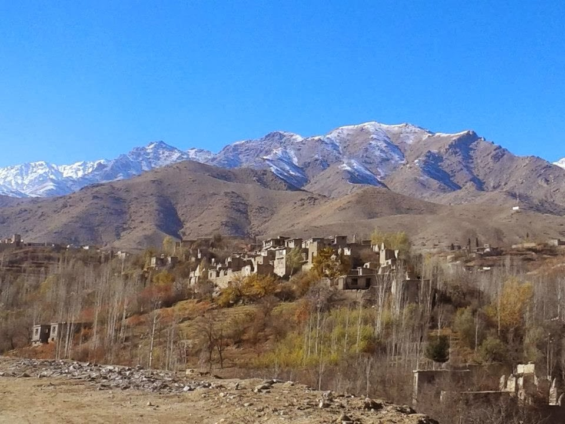

Notre histoire
De Shenaky à la Californie
Nommé d’après le village où je suis né, Shenaky Winery réunit l’héritage viticole d’Istalif, les souvenirs de France et une production artisanale en Californie.
Découvrir notre histoire
Shenaky Winery
Un vin qui pleure est un bon vin
Faites défiler pour découvrirNotre histoire
Nommé d’après le village où je suis né, Shenaky Winery réunit l’héritage viticole d’Istalif, les souvenirs de France et une production artisanale en Californie.
Découvrir notre histoire
Nos vins
Découvrez une sélection de vins de notre cave, produits artisanalement en quantités limitées.
Médailles
Les vins Shenaky ont été récompensés lors de concours internationaux de vinification amateur, notamment avec des médailles pour Symphony et d’autres cuvées artisanales.
Contact
Contactez-nous pour obtenir des informations et connaître nos prochaines cuvées.